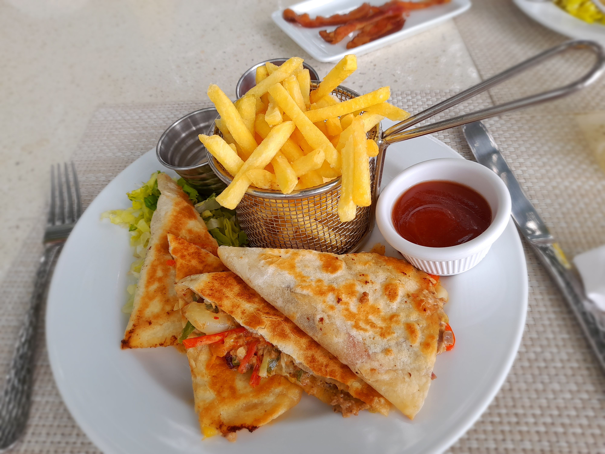
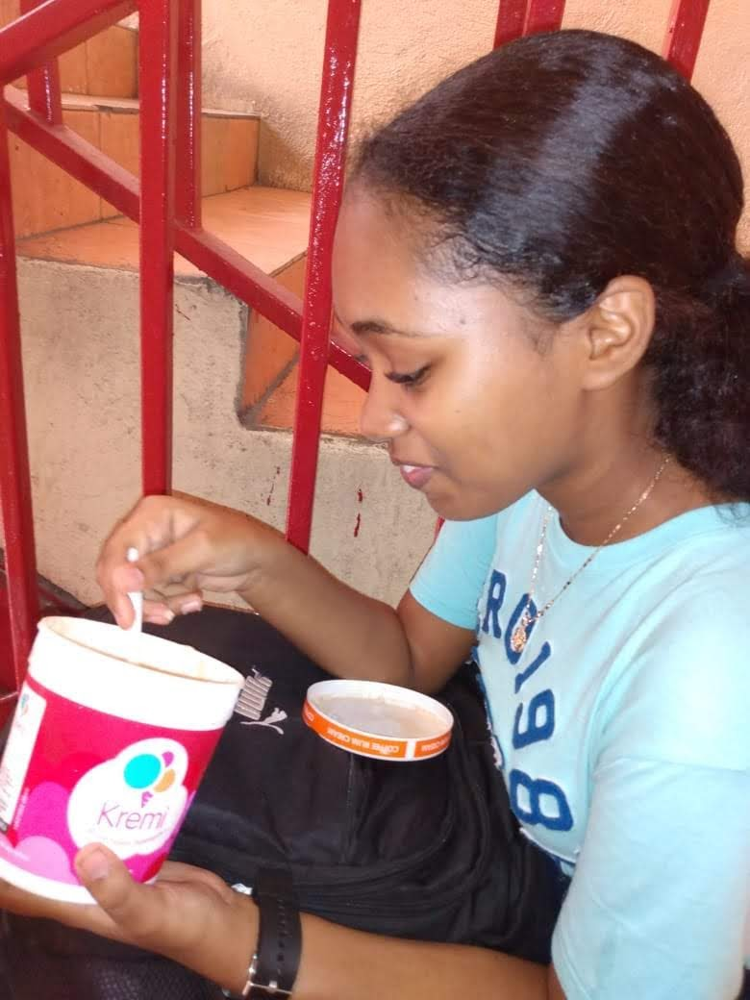

ALL ABOUT ME
“Books, she has found, are a way to live a thousand lives--or to find strength in a very long one.”
― V.E. Schwab, The Invisible Life of Addie LaRue
Presently, I am attending University of Technology in hopes of attaining my dream of becoming a programmer or software engineer.
Hobbies/Likes/Dislikes
- Drawing
- As long as I can remember I've been drawing, whether it is to relieve stress or just for the simple enjoyment of creating new things. So naturally, one of the things I dislike is having an art block.
- Coding
- I developed a liking towards coding during my 3rd year of highschool when I discovered I could design my own working websites and programs.
- After discovering this, I watched different videos to help me get started on my journey such as:
- Reading
- Reading is one of my favorite hobbies as it is a great way to escape from the reality of this world and jump into a next.
One of my dislikes is reading long boring novels so I like to stick to reading fanasty books with a bit comedy/ romance so I can be entertained. - Some of my top favorite books are:
- Cooking & Eating
- I really love tasting and creating delicious food items that will satisfy my palate
- Some examples are:
.jpg)
.jpg)


| Omniscent Reader | A Darker Shade of Magic | The Invisible Life of Addie LaRue |
|---|---|---|
 |
 
Personality Test
After completing the Myers-Briggs personality test, I found out that I was an INFJ-T. This is one of the rarest personalities and persons who have this personality are called advocates.
It aslso stated that I am a turbulent individual, meaning someone who is success-driven, perfectionistic, and eager to improve. According to the 16 personalties website, an advocate tends to typically care more about altruism than personal gain and has a commitment to making the world a better place.
I totally agree with this as I'm commited to make this world a better place and acts of injustice greatly upsets me. It was also stated that INFJ's are introverted but they value deep, authentic relationships with others and they tend to communicate in a way that is warm and sensitive. I also agree with this as I am an introvert who has only one close friend, and I tend to be cautious of what I say to certain people.
Some strengths that I have that relates to an INFJ are:
- Creative
- Altrutistic
- Insightful
- Principled
- Passionate
While some weakness are:
- Sensitive to cristism
- Perfectionist
- Reluctation to open up
- Prone to burnout
Because of the many similarities there are between what was stated and myself, I believe this test in my case is valid.